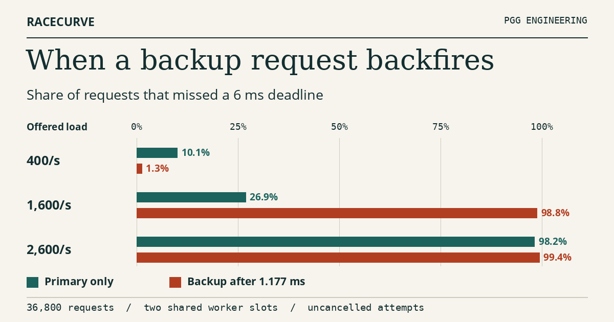

When a backup request backfires
In a two-slot test, a backup after 1.177 ms cut 6 ms deadline misses from 10.1% to 1.3% at 400 requests/s. At 1,600 requests/s, misses rose from 26.9% to 98.8%.
Run the analysis in Colab · Read in Markdown

What the queue saw
Two replicas shared two worker slots on one host. Both copies ran to completion. The experiment measured 36,800 requests over 12 runs at three offered loads, with two workload seeds and two policies. The clock started at the planned arrival and stopped when the first copy finished.
| Offered load | Requests per arm | Primary misses | Hedged misses | Backups launched |
|---|---|---|---|---|
| 400/s | 1,600 | 161 (10.1%) | 21 (1.3%) | 261 |
| 1,600/s | 6,400 | 1,722 (26.9%) | 6,324 (98.8%) | 6,350 |
| 2,600/s | 10,400 | 10,212 (98.2%) | 10,338 (99.4%) | 10,371 |
At 1,600 requests/s, the timer launched 6,350 backups for 6,400 requests. Those copies competed for the same slots as the primaries. Services with independent capacity or effective cancellation can behave differently.